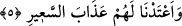

5. Andolsun ki biz, (dünyaya) en yakın olan göğü kandillerle donattık. Bunları
şeytanlara atış taneleri yaptık ve onlara alevli ateş azâbını hazırladık.
“Andolsun ki biz en yakın olan göğü kandillerle donattık.” Bu âyet-i kerîme
göklerin eksiklik şâibesinden uzak olduğunun beyân edilişinin ardından son derece
güzel olduğunu ifâde etmektedir. Cümleye kasemle yâni yeminle başlanması, ifâde
olunan cümlenin mânâsına son derece özen gösterildiğini ön plana çıkarmak içindir.
Buna göre âyet-i kerîmenin mânâsı; “Andolsun ki biz yeryüzüne ve insanlara en yakın
olan gökyüzünü süsledik ve gâyet güzel kıldık” şeklindedir. Âyetin metninde yer alan
“zeyn” kelimesi, “şeyn”nin yâni çirkinliğin zıddıdır. Aynı âyette yer alan “dünya”
kelimesi ise “en yakın” anlamına olan “ednâ”nın müennesidir. Göğün diğer göklerden
daha yakın olması mutlak anlamda değil, üzerini kapatmış olduğu yeryüzüne nispetledir.
Çünkü aynı durum üzerindeki arşa oranla tam tersinedir. Yâni arşa en yakın olan
gökyüzü dünyaya en yakın olan gökyüzünün tersine dünyaya en uzak olanıdır.
Burada yer alan “masâbîh”, misbâh kelimesinin çoğuludur. Misbâh ise “kandil”
anlamınadır. Bu kelimenin elif lâmsız olarak getirilmesi tâzim ve övgü ifâde etmek
içindir. Buna göre âyetin mânâsı şöyle olur: “Andolsun ki biz en yakın olan göğü,
geceleyin kandiller gibi ışık verip etrafı aydınlatan sâbit ve gezegen yıldızlarla
süsledik.” Bütün bunlar, dünyaya en yakın olan gökyüzünde kümelenmiş olarak
görülmektedir. Oysa içlerinden bâzıları diğer göklerde yer almaktadırlar. Gökler şeffaf
ve saf gök cisimlerinden oluştuğuna göre yıldızlar ister en yakın gökte ister başka
semâlarda olsunlar mutlaka yeryüzüne en yakın olan semâda zuhûr edecekler ve oradan
bizlere gözükeceklerdir. Her iki takdire göre de dünyaya en yakın olan semâ bu
kandillerle süslüdür. Âyette yer alan “mesâbîh” yâni kandiller kelimesine gökteki ay da
dâhildir. Çünkü ay geceleyin ışık veren en parlak yıldızdır. Allah Teâlâ yıldızları,
dünyanın tavanı mesâbesinde olan semânın ziyneti kıldığına göre kullar da kandilleri ve
lambaları, mescidlerin ve câmilerin tavanlarında süs hâline getirsinler. Zira hayırda
israf diye bir şey olamaz. Haberlerde zikredildiğine göre Peygamber Efendimiz (s.a.)’in
mescidi içinde gece olduğunda aydınlanmak üzere hurma dalları yakılıyordu. Temim
Dârî (r.a.) Medine-i Münevvere’ye geldiği zaman beraberinde kandil, ip, yağ getirmişti
ve bu kandilleri mescidin duvarlarına asmış ve yakmıştı. Peygamber Efendimiz (s.a.)
buyurdular ki: “Sen mescidimizi nurlandırdın, Allah Teâlâ da seni nurlandırsın.
Allah’a yemin ederim ki şâyet benim kızım olsaydı onu seninle nikâhlardım.” [11]
Peygamber Efendimiz (s.a.) bu ifâdelerinden sonra Temim Dârî’ye “Sirac” ismini verir.
Böylece sirac ismi onun ön ismi olarak kalır. Ardından Hz. Ömer (r.a.), mescidde
insanlar teravih namazında Übey bin Kâ’b’ın etrafında toplandıklarında bu kandilleri
çoğaltır. Hz. Ali (k.v.), bu kandillerin mescidi süslediğini gördüğünde: “Mescidimizi
nurlandırdın, Allah da senin kabrini nurlandırsın ey Hattab oğlu Ömer!” diye duâ eder.
Birisi yaşadığı bir olayı şöyle aktarır: Hâlife Me’mûn mescidlerde kandillerin